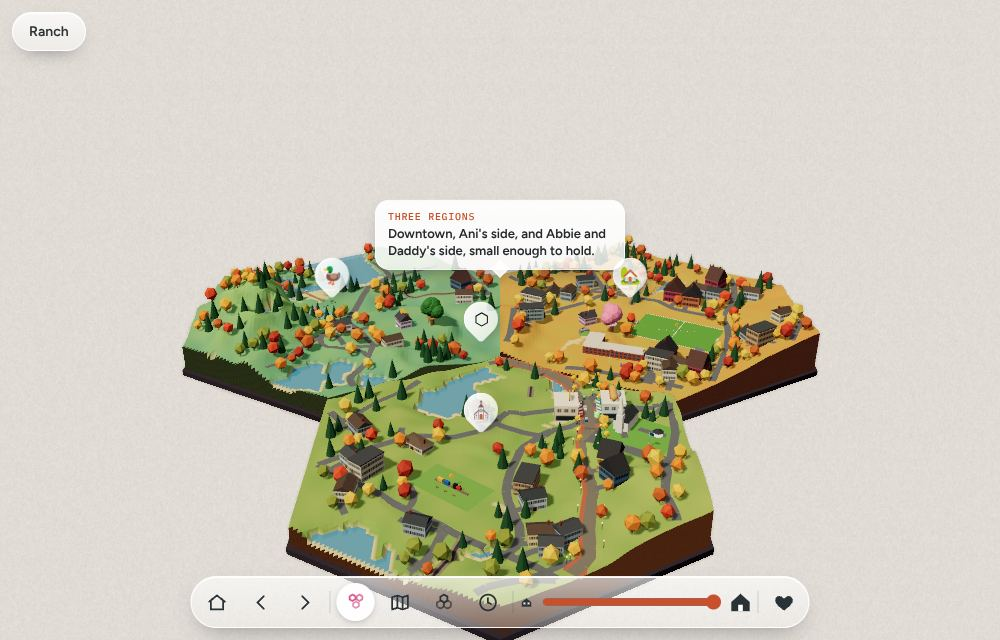
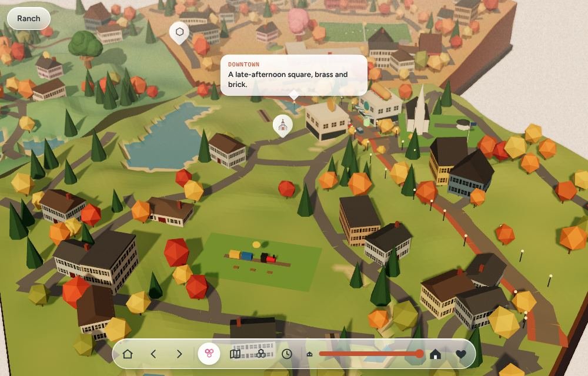
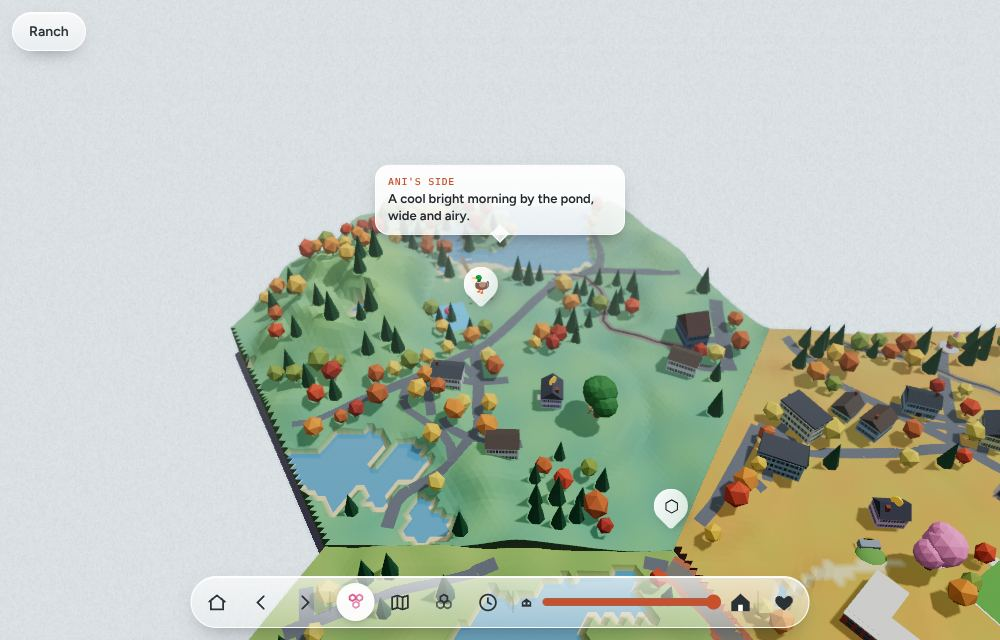
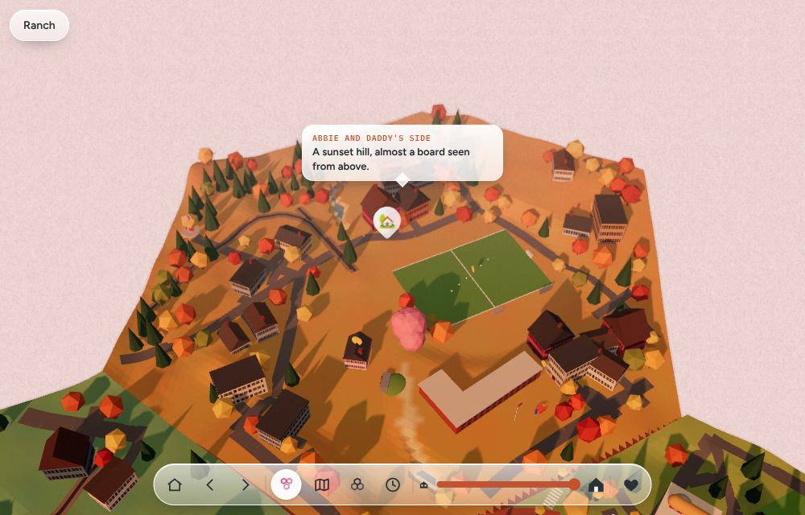

What it is
Close things stay exactly as drawn. Further away the world turns into wet watercolour: colour lifts towards the paper and takes the zone's wash colour, edges soften and bleed into each other, tones settle into flat pooled washes, pigment granulates, and the paper's fibres show through. A far hill is hidden by mood, not by fog, and nothing near is ever covered.
Each part of Winchester has its own opinion about its zoomed-out view: Downtown is brick and brass dissolving to rose, Ani's side is cool, wide and wet, Abbie and Daddy's side pools rose and violet in the valleys. Same shader, three sets of numbers.
Design card
- What the player feels: the far world is a painting, the near world is a place. Pulling back feels like stepping away from a picture.
- How would the character know? They would not: it is the way distance looks to a child's eye, so it is none, the world simply looks different. No label, gauge or hint appears.
- Layers: a presentation-layer look on the finished picture; it never touches the world, so characters, AI and
lookare unaffected. - Whole-game adaptation: the wash colour follows the zone's light; time of day and weather can drive
tune()later. - No masking: wash is capped below 85% and only grows with distance; the play HUD is untouched. Style yes, expression never. PG.
Composes with Paint the world
The pass reads only colour and depth, never materials. Splatoon-style world paint is drawn into the scene first, so painted ground simply washes with the rest of the distance; Painted Brush and Sunday Toon do the same.
In the game
Live in Abbie's Town: /town (the three dioramas and the pulled-back trio). Each region's look carries a wash zone; the camera's own distance drives the rest. tour: false (a look, not a thing to learn). Add ?watercolour=off to the town address to compare; developer console: AbbieTown.watercolour.tune({bleed: 5}).




Per-zone numbers
Controls
API (simulations/watercolour-distance.mjs)
const W = watercolourDistance(THREE, renderer, {logDepth: true}); // after the renderer's own settings
W.precompile(scene, camera); // compiles the scene and the pass up front; render() draws directly until it is done
W.setZone('downtown'); // 'off' eases to no wash and costs nothing
// per frame
W.update(dt); W.render(scene, camera); // in place of renderer.render
W.tune({wash: '#ffaa88', bleed: 4}); // live edit, clamped to WASH_CONTROLS
washAt(distance, zone) // the same falloff in JS, for tests and for gameplay that needs to know
Cost and the precompile rule
- One colour+depth target (MSAA 4x, half float) and one full-screen pass; 10 taps only where wash is above 0.4%, none in the near field.
- Uniforms only change at run time, so no shader compiles during play.
compileAsyncruns at load; nothing is drawn washed until it is ready. - Depth is decoded for the page's logarithmic depth buffer (
pow(far+1, d) - 1), or the perspective form whenlogDepthis false. - The readout under the study view shows the pass's CPU submit time and the frame time on your device. Measured here: see readout.
Source
// Watercolour distance, the Zelda-inspired look from AW-STUDY-0045 entry 6 (docs/oracle/shaders/INSPIRING_SHADERS_STUDY.md),
// promoted to a production shader. Near the camera the world stays exactly as drawn. With distance it turns into wet
// watercolour: the colours lift towards the paper and shift towards the zone's wash colour, edges soften and bleed into
// each other, the tones settle into flat pooled washes, pigment granulates, and the paper's grain shows through.
// Style only: nothing from the game itself, just how a painted distance is made.
// const W = watercolourDistance(T, renderer, {logDepth: true}) one per renderer (after the renderer's own settings)
// W.setZone('downtown') eases to that zone's numbers; 'off' eases to no wash (and then costs nothing)
// W.update(dt) per frame: eases the live numbers towards the zone
// W.render(scene, camera) in place of renderer.render(scene, camera)
// W.ready promise: the scene and the pass are compiled; until it resolves render() draws directly
// W.tune({bleed: 4, wash: '#ffaa88'}) edits the live zone (the study page's sliders, the developer console)
// W.dispose()
// Cost: one extra full-screen pass (a colour+depth target, then 10 taps only where the wash is above 0.4%). The shader is
// compiled once, up front; zones and sliders only move uniforms, so nothing compiles while you play.
// The pass reads only depth and colour, never materials, so it composes with the look of the things drawn (Sunday Toon,
// Painted Brush, the paint of Paint the world): they draw into the target, the wash paints the distance over them.
export const WASH_ZONES = {
// distances are camera-space metres of the page's world; wash colours are sRGB hex; blur and bleed are pixels at full wash
real: {mood: 'the real town from far above, a cool wet horizon', start: 2600, end: 11000, curve: 1.15, max: .78, wash: '#c3d3dc', paper: '#f1ecdf', tint: .55, lift: .32, desat: .3, blur: 3.2, bleed: 2.4, levels: 6, flat: .5, gran: .2, paper_grain: .45, edge: .3},
trio: {mood: 'three little worlds on one table, a warm hazy edge', start: 340, end: 980, curve: 1.1, max: .74, wash: '#dcc8b2', paper: '#f6ecdc', tint: .5, lift: .3, desat: .28, blur: 3, bleed: 2, levels: 6, flat: .5, gran: .2, paper_grain: .45, edge: .3},
downtown: {mood: 'late afternoon, brick and brass dissolving into rose', start: 150, end: 430, curve: 1.2, max: .78, wash: '#e3ae94', paper: '#f7ead4', tint: .62, lift: .34, desat: .34, blur: 3, bleed: 2.2, levels: 5, flat: .6, gran: .24, paper_grain: .5, edge: .38},
'anis-side': {mood: 'a cool morning by the pond, wide, airy and wet', start: 200, end: 540, curve: 1, max: .84, wash: '#9cc6d6', paper: '#eef5f3', tint: .66, lift: .46, desat: .38, blur: 4.6, bleed: 3.2, levels: 7, flat: .45, gran: .18, paper_grain: .42, edge: .26},
'abbie-daddy-side': {mood: 'a sunset hill, rose and violet pooling in the valleys', start: 180, end: 480, curve: 1.25, max: .8, wash: '#d48aa4', paper: '#f9e4d3', tint: .66, lift: .36, desat: .3, blur: 3.6, bleed: 2.6, levels: 4, flat: .65, gran: .26, paper_grain: .5, edge: .5},
};
// the numbers the sliders may move, with their limits (the study page builds its controls from this)
export const WASH_CONTROLS = {
start: {min: 40, max: 3000, label: 'Clear until'}, end: {min: 200, max: 12000, label: 'Fully washed by'}, curve: {min: .5, max: 3, label: 'Falloff curve'},
max: {min: 0, max: .9, label: 'Most wash'}, tint: {min: 0, max: 1, label: 'Colour shift'}, lift: {min: 0, max: .8, label: 'Towards the paper'}, desat: {min: 0, max: .8, label: 'Pigment fade'},
blur: {min: 0, max: 9, label: 'Softness (px)'}, bleed: {min: 0, max: 8, label: 'Edge bleed (px)'}, levels: {min: 2, max: 12, label: 'Wash steps'}, flat: {min: 0, max: 1, label: 'Flat washes'},
gran: {min: 0, max: .6, label: 'Granulation'}, paper_grain: {min: 0, max: 1, label: 'Paper grain'}, edge: {min: 0, max: 1, label: 'Wet edge'},
};
const WC_NUMERIC = Object.keys(WASH_CONTROLS), WC_COLOURS = ['wash', 'paper'];
const WC_OFF = {...WASH_ZONES.real, max: 0};
// how much wash a surface at this distance carries (0 to zone.max), the same curve the shader uses
export function washAt(dist, z) {
const t = Math.max(0, Math.min(1, (dist - z.start) / Math.max(1, z.end - z.start))), s = t * t * (3 - 2 * t);
return Math.pow(s, z.curve) * z.max;
}
export function zoneParams(id) { return {...(WASH_ZONES[id] || WC_OFF)}; }
// the numbers between two zones (k 0 gives a, 1 gives b): colours mix in sRGB hex, so a crossing never passes through grey
export function mixZones(a, b, k) {
const out = {...b}, h = c => [1, 3, 5].map(i => parseInt(c.slice(i, i + 2), 16));
for (const n of WC_NUMERIC) out[n] = a[n] + (b[n] - a[n]) * k;
for (const n of WC_COLOURS) { const x = h(a[n]), y = h(b[n]); out[n] = '#' + x.map((v, i) => Math.round(v + (y[i] - v) * k).toString(16).padStart(2, '0')).join(''); }
return out;
}
const WC_VERT = `varying vec2 vUv;void main(){vUv=position.xy*.5+.5;gl_Position=vec4(position.xy,0.,1.);}`;
const WC_TAPS = 10;
const WC_FRAG = `precision highp float;
uniform sampler2D tColor,tDepth;uniform vec2 uRes;uniform float uNear,uFar,uLog;
uniform float uStart,uEnd,uCurve,uMax,uTint,uLift,uDesat,uBlur,uBleed,uLevels,uFlat,uGran,uPaperK,uEdge,uDpr;
uniform vec3 uWashMul,uPaper;varying vec2 vUv;
float h21(vec2 p){p=fract(p*vec2(123.34,456.21));p+=dot(p,p+45.32);return fract(p.x*p.y);}
float vn(vec2 p){vec2 i=floor(p),f=fract(p);f=f*f*(3.-2.*f);return mix(mix(h21(i),h21(i+vec2(1,0)),f.x),mix(h21(i+vec2(0,1)),h21(i+vec2(1,1)),f.x),f.y);}
float viewZ(float d){if(uLog>.5)return pow(uFar+1.,d)-1.;float zn=d*2.-1.;return 2.*uNear*uFar/(uFar+uNear-zn*(uFar-uNear));}
float wash(vec2 uv){float z=viewZ(texture2D(tDepth,uv).x);float t=clamp((z-uStart)/max(1.,uEnd-uStart),0.,1.);return pow(t*t*(3.-2.*t),uCurve)*uMax;}
float lum(vec3 c){return dot(c,vec3(.2126,.7152,.0722));}
void main(){
vec2 px=1./uRes;vec4 src=texture2D(tColor,vUv);float w=wash(vUv);
vec3 col=src.rgb;
if(w>.004){
vec2 fc=gl_FragCoord.xy/uDpr;
// wet bleed: the colour runs a little way along the paper's own wobble
vec2 warp=(vec2(vn(fc*.045),vn(fc*.045+vec2(17.,5.)))-.5)*2.*uBleed*w*px*uDpr;
vec2 uv=vUv+warp;float r=uBlur*w*uDpr;vec3 acc=src.rgb;float tw=1.;
for(int i=0;i<${WC_TAPS};i++){
float a=float(i)*2.39996+h21(fc)*6.2832,rr=sqrt((float(i)+.5)/${WC_TAPS}.)*r;vec2 o=uv+vec2(cos(a),sin(a))*rr*px;
// a near thing never paints itself over what is behind it: taps count only when they are as washed as this pixel
float k=smoothstep(w-.22,w,wash(o));acc+=texture2D(tColor,o).rgb*k;tw+=k;}
col=acc/tw;
float l=lum(col);
// settle the tones into flat, pooled washes
float lv=max(2.,uLevels),ql=(floor(l*lv+.5)+smoothstep(.35,.65,fract(l*lv+.5)))/lv;ql=mix(l,ql,w*uFlat);
col*=clamp(ql/max(l,.002),.6,1.5);l=lum(col);
// atmospheric shift: pigment fades, the zone's colour comes up, everything lifts towards the paper
float wk=w/max(uMax,.001)*min(1.,uMax*1.25);
col=mix(col,vec3(l),wk*uDesat);col=mix(col,col*uWashMul,wk*uTint);col=mix(col,uPaper*(.55+l*.6),wk*uLift);
// the pigment pools at the edge of each wash
float e=length(vec2(lum(texture2D(tColor,vUv+vec2(px.x,0.)*uDpr*1.5).rgb)-lum(texture2D(tColor,vUv-vec2(px.x,0.)*uDpr*1.5).rgb),lum(texture2D(tColor,vUv+vec2(0.,px.y)*uDpr*1.5).rgb)-lum(texture2D(tColor,vUv-vec2(0.,px.y)*uDpr*1.5).rgb)));
col*=1.-clamp(e*3.,0.,1.)*uEdge*wk*.5;
// granulation (pigment in the paper's dips) and the paper's own fibres: both live on the paper, not the world
float g=vn(fc*.55)*.6+vn(fc*1.7+9.)*.4,f=h21(floor(fc*1.)+.5)*.5+vn(fc*vec2(.9,.25))*.5;
col*=1.+(g-.5)*uGran*wk*1.6;col*=1.+(f-.5)*uPaperK*wk*.5;
}
col+=(h21(gl_FragCoord.xy)-.5)/255.;
gl_FragColor=vec4(col,1.);
#include <tonemapping_fragment>
#include <colorspace_fragment>
}`;
export function watercolourDistance(T, renderer, opts = {}) {
const logDepth = opts.logDepth ?? !!renderer.capabilities.logarithmicDepthBuffer, samples = opts.samples ?? 4;
const live = zoneParams('off'), target = zoneParams('off'); let zone = 'off';
const size = new T.Vector2(), dpr = () => renderer.getPixelRatio();
let rt = null;
const makeTarget = (w, h) => {
rt?.depthTexture?.dispose(); rt?.dispose();
const depth = new T.DepthTexture(w, h); depth.type = T.UnsignedIntType;
rt = new T.WebGLRenderTarget(w, h, {samples, type: T.HalfFloatType, depthTexture: depth, colorSpace: T.LinearSRGBColorSpace});
};
const U = {tColor: {value: null}, tDepth: {value: null}, uRes: {value: new T.Vector2(1, 1)}, uNear: {value: .1}, uFar: {value: 1000}, uLog: {value: logDepth ? 1 : 0}, uDpr: {value: 1},
uStart: {value: live.start}, uEnd: {value: live.end}, uCurve: {value: live.curve}, uMax: {value: 0}, uTint: {value: live.tint}, uLift: {value: live.lift}, uDesat: {value: live.desat},
uBlur: {value: live.blur}, uBleed: {value: live.bleed}, uLevels: {value: live.levels}, uFlat: {value: live.flat}, uGran: {value: live.gran}, uPaperK: {value: live.paper_grain}, uEdge: {value: live.edge},
uWashMul: {value: new T.Color()}, uPaper: {value: new T.Color()}};
const mat = new T.ShaderMaterial({uniforms: U, vertexShader: WC_VERT, fragmentShader: WC_FRAG, depthTest: false, depthWrite: false});
const quadGeo = new T.BufferGeometry(); quadGeo.setAttribute('position', new T.Float32BufferAttribute([-1, -1, 0, 3, -1, 0, -1, 3, 0], 3));
const quad = new T.Mesh(quadGeo, mat); quad.frustumCulled = false; const quadScene = new T.Scene(); quadScene.add(quad); const quadCam = new T.OrthographicCamera(-1, 1, 1, -1, 0, 1);
const c0 = new T.Color(), c1 = new T.Color();
const W = {
zones: WASH_ZONES, live, target, enabled: opts.enabled !== false, ready: Promise.resolve(), compiled: false, passes: 0, lastPassMs: 0,
get zone() { return zone; },
setZone(id, snap = false) { zone = WASH_ZONES[id] ? id : 'off'; Object.assign(target, zoneParams(zone)); if (zone === 'off') target.max = 0; if (snap) { Object.assign(live, target); W.apply(); } return zone; },
// edit the live zone; the zone keeps easing to these numbers rather than back to its preset
tune(v) { for (const n of WC_NUMERIC) if (v[n] != null) target[n] = Math.max(WASH_CONTROLS[n].min, Math.min(WASH_CONTROLS[n].max, +v[n])); for (const n of WC_COLOURS) if (v[n]) target[n] = v[n]; return target; },
update(dt = .016) {
const k = 1 - Math.exp(-dt * 3.2), m = mixZones(live, target, k); Object.assign(live, m); live.max += (target.max - live.max) * k; if (Math.abs(live.max - target.max) < 1e-3) live.max = target.max; W.apply();
},
apply() {
U.uStart.value = live.start; U.uEnd.value = live.end; U.uCurve.value = live.curve; U.uMax.value = live.max; U.uTint.value = live.tint; U.uLift.value = live.lift; U.uDesat.value = live.desat;
U.uBlur.value = live.blur; U.uBleed.value = live.bleed; U.uLevels.value = live.levels; U.uFlat.value = live.flat; U.uGran.value = live.gran; U.uPaperK.value = live.paper_grain; U.uEdge.value = live.edge;
c0.set(live.wash); const l = c0.r * .2126 + c0.g * .7152 + c0.b * .0722; U.uWashMul.value.copy(c0).multiplyScalar(1 / Math.max(l, .02)); c1.set(live.paper); U.uPaper.value.copy(c1);
},
active() { return W.enabled && live.max > .002; },
// compile the scene's materials and the pass up front, so the first washed frame costs the same as any other
precompile(scene, camera) {
W.apply(); const bw = renderer.getDrawingBufferSize(size).x, bh = size.y; if (!rt || rt.width !== bw || rt.height !== bh) makeTarget(bw, bh);
const go = renderer.compileAsync ? p => renderer.compileAsync(p[0], p[1]) : p => Promise.resolve(renderer.compile(p[0], p[1]));
W.ready = Promise.all([go([scene, camera]), go([quadScene, quadCam])]).then(() => { U.tColor.value = rt.texture; U.tDepth.value = rt.depthTexture; W.compiled = true; });
return W.ready;
},
render(scene, camera) {
if (!W.active() || !W.compiled) { renderer.render(scene, camera); return; }
const t0 = performance.now(), bw = renderer.getDrawingBufferSize(size).x, bh = size.y;
if (!rt || rt.width !== bw || rt.height !== bh) { makeTarget(bw, bh); U.tColor.value = rt.texture; U.tDepth.value = rt.depthTexture; }
U.uRes.value.set(bw, bh); U.uNear.value = camera.near; U.uFar.value = camera.far; U.uDpr.value = dpr();
renderer.setRenderTarget(rt); renderer.render(scene, camera); renderer.setRenderTarget(null); renderer.render(quadScene, quadCam);
W.passes++; W.lastPassMs = performance.now() - t0;
},
dispose() { rt?.depthTexture?.dispose(); rt?.dispose(); mat.dispose(); quadGeo.dispose(); },
};
W.setZone(opts.zone || 'off', true);
return W;
}
Checks
- Headless: falloff is monotonic and zero before
start, zones mix without passing through grey, tune() clamps, shader declares every uniform it is given (simulations/tests/watercolour.test.mjs). - Browser: the town runs with the pass compiled (
AbbieTown.watercolour.compiled), the near field is pixel-identical when wash is 0.